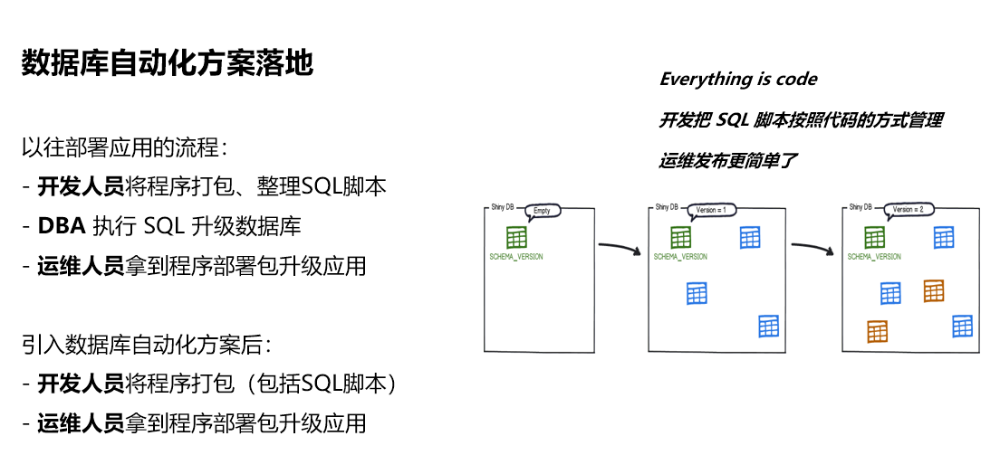

数据库自动化
数据库自动化是构建 CI/CD 时被忽略的最重要的技术领域之一。不依赖数据库的应用程序可以快速构建起CI/CD 的能力；但是，对于依赖数据库的应用程序的部署却不那么容易。
没有有效的数据库自动化，各自环境中的数据快照会应无法及时的版本迭代而趋于不可用。CI/CD 强调不断、频繁的集成和代码交付，但未能实现数据库自动化，即可能越频繁的集成反而越无法追踪数据库数据的迭代更新，需要花费更多的时间处理环境的数据问题。
实现数据库自动化，尤其是对于以数据为中心的应用程序，有着至关重要的意义。

目前大部分的应用已引入数据库自动化，但现有的方案只是针对主流的关系型数据库有效，如：
Oracle, SQL Server, Azure Synapse, DB2, MySQL, Aurora MySQL, MariaDB, Percona XtraDB Cluster, TestContainers, PostgreSQL , Aurora PostgreSQL, Redshift, CockroachDB, SAP HANA, Sybase ASE, Informix, H2, HSQLDB, Derby, Snowflake, SQLite ,Firebird。